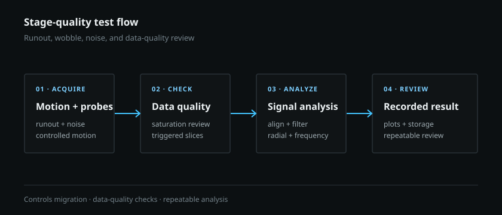

Quality test-method redevelopment
Stage runout & wobble qualification
Revived a legacy stage-quality process, moved it to current controls, and automated the signal checks needed for a repeatable result.
Problem
After the process had already been used in production, I investigated why its results were not consistently separating actual stage behavior from measurement artifacts. The process had drifted across legacy controls, newer hardware, and conflicting work instructions.
What I built
- Rebuilt the motion and data-acquisition portion of the test process on a current control system, then checked its correlation with the earlier method.
- Added data-quality checks during acquisition, including probe-saturation review and trigger-based signal slicing.
- Created repeatable noise/runout analysis for time alignment, frequency decomposition, radial analysis, interpolation, plotting, and result storage.
- Updated the test and data-processing procedures so the same analysis path could be repeated and reviewed.

Result
The rebuilt method correlated with the earlier process and produced a reviewable result instead of a chart that depended on one engineer's interpretation. I identified a six-figure annual cost-avoidance opportunity by restoring a viable internal qualification path and reducing dependence on higher-cost external replacement stages. The same work also supports improved yield and less rebuild/retest effort.
- Signal handling: I identified time alignment and filtering factors that could change the apparent result.
- Motion context: datum/reference handling and velocity jitter needed to be controlled.
- Measurement quality: electrical noise, probe saturation, and inconsistent procedures could obscure actual stage behavior.